Summary
This experiment investigates telescope observation quality. Plackett-Burman screening of aperture, focal ratio, eyepiece focal length, tracking rate, and cooling time for image sharpness and limiting magnitude.
The design varies 5 factors: aperture mm (mm), ranging from 80 to 300, focal ratio (f/), ranging from 4 to 12, eyepiece mm (mm), ranging from 6 to 25, tracking rate (arcsec/s), ranging from 0.5 to 2.0, and cooldown min (min), ranging from 15 to 90. The goal is to optimize 2 responses: sharpness (pts) (maximize) and limiting mag (mag) (maximize). Fixed conditions held constant across all runs include mount type = equatorial, site = suburban.
A Plackett-Burman screening design was used to efficiently test 5 factors in only 8 runs. This design assumes interactions are negligible and focuses on identifying the most influential main effects.
Key Findings
For sharpness, the most influential factors were focal ratio (31.5%), cooldown min (28.2%), eyepiece mm (14.9%). The best observed value was 7.5 (at aperture mm = 80, focal ratio = 12, eyepiece mm = 6).
For limiting mag, the most influential factors were cooldown min (36.4%), eyepiece mm (32.3%), aperture mm (15.2%). The best observed value was 13.2 (at aperture mm = 80, focal ratio = 12, eyepiece mm = 6).
Recommended Next Steps
- Follow up with a response surface design (CCD or Box-Behnken) on the top 3–4 factors to model curvature and find the true optimum.
- Consider whether any fixed factors should be varied in a future study.
- The screening results can guide factor reduction — drop factors contributing less than 5% and re-run with a smaller, more focused design.
Experimental Setup
Factors
| Factor | Low | High | Unit |
|---|
aperture_mm | 80 | 300 | mm |
focal_ratio | 4 | 12 | f/ |
eyepiece_mm | 6 | 25 | mm |
tracking_rate | 0.5 | 2.0 | arcsec/s |
cooldown_min | 15 | 90 | min |
Fixed: mount_type = equatorial, site = suburban
Responses
| Response | Direction | Unit |
|---|
sharpness | ↑ maximize | pts |
limiting_mag | ↑ maximize | mag |
Configuration
{
"metadata": {
"name": "Telescope Observation Quality",
"description": "Plackett-Burman screening of aperture, focal ratio, eyepiece focal length, tracking rate, and cooling time for image sharpness and limiting magnitude"
},
"factors": [
{
"name": "aperture_mm",
"levels": [
"80",
"300"
],
"type": "continuous",
"unit": "mm"
},
{
"name": "focal_ratio",
"levels": [
"4",
"12"
],
"type": "continuous",
"unit": "f/"
},
{
"name": "eyepiece_mm",
"levels": [
"6",
"25"
],
"type": "continuous",
"unit": "mm"
},
{
"name": "tracking_rate",
"levels": [
"0.5",
"2.0"
],
"type": "continuous",
"unit": "arcsec/s"
},
{
"name": "cooldown_min",
"levels": [
"15",
"90"
],
"type": "continuous",
"unit": "min"
}
],
"fixed_factors": {
"mount_type": "equatorial",
"site": "suburban"
},
"responses": [
{
"name": "sharpness",
"optimize": "maximize",
"unit": "pts"
},
{
"name": "limiting_mag",
"optimize": "maximize",
"unit": "mag"
}
],
"settings": {
"operation": "plackett_burman",
"test_script": "use_cases/153_telescope_observation/sim.sh"
}
}
Experimental Matrix
The Plackett-Burman Design produces 8 runs. Each row is one experiment with specific factor settings.
| Run | aperture_mm | focal_ratio | eyepiece_mm | tracking_rate | cooldown_min |
|---|
| 1 | 300 | 12 | 25 | 0.5 | 15 |
| 2 | 80 | 4 | 25 | 2.0 | 15 |
| 3 | 80 | 12 | 6 | 2.0 | 15 |
| 4 | 300 | 12 | 25 | 2.0 | 90 |
| 5 | 80 | 12 | 6 | 0.5 | 90 |
| 6 | 300 | 4 | 6 | 2.0 | 90 |
| 7 | 80 | 4 | 25 | 0.5 | 90 |
| 8 | 300 | 4 | 6 | 0.5 | 15 |
Step-by-Step Workflow
1
Preview the design
$ python doe.py info --config use_cases/153_telescope_observation/config.json
2
Generate the runner script
$ python doe.py generate --config use_cases/153_telescope_observation/config.json \
--output use_cases/153_telescope_observation/results/run.sh --seed 42
3
Execute the experiments
$ bash use_cases/153_telescope_observation/results/run.sh
4
Analyze results
$ python doe.py analyze --config use_cases/153_telescope_observation/config.json
5
Get optimization recommendations
$ python doe.py optimize --config use_cases/153_telescope_observation/config.json
6
Multi-objective optimization
With 2 competing responses, use --multi to find the best compromise via Derringer–Suich desirability.
$ python doe.py optimize --config use_cases/153_telescope_observation/config.json --multi
7
Generate the HTML report
$ python doe.py report --config use_cases/153_telescope_observation/config.json \
--output use_cases/153_telescope_observation/results/report.html
Features Exercised
| Feature | Value |
|---|
| Design type | plackett_burman |
| Factor types | continuous (all 5) |
| Arg style | double-dash |
| Responses | 2 (sharpness ↑, limiting_mag ↑) |
| Total runs | 8 |
Analysis Results
Generated from actual experiment runs using the DOE Helper Tool.
Response: sharpness
Top factors: focal_ratio (31.5%), cooldown_min (28.2%), eyepiece_mm (14.9%).
ANOVA
| Source | DF | SS | MS | F | p-value |
|---|
| Source | DF | SS | MS | F | p-value |
| aperture_mm | 1 | 0.7812 | 0.7812 | 0.667 | 0.4513 |
| focal_ratio | 1 | 4.0612 | 4.0612 | 3.466 | 0.1217 |
| eyepiece_mm | 1 | 0.9112 | 0.9112 | 0.778 | 0.4182 |
| tracking_rate | 1 | 0.5513 | 0.5513 | 0.470 | 0.5233 |
| cooldown_min | 1 | 3.2513 | 3.2513 | 2.774 | 0.1567 |
| aperture_mm*focal_ratio | 1 | 0.9112 | 0.9112 | 0.778 | 0.4182 |
| aperture_mm*eyepiece_mm | 1 | 4.0612 | 4.0612 | 3.466 | 0.1217 |
| aperture_mm*tracking_rate | 1 | 3.2512 | 3.2512 | 2.774 | 0.1567 |
| aperture_mm*cooldown_min | 1 | 0.5512 | 0.5512 | 0.470 | 0.5233 |
| focal_ratio*eyepiece_mm | 1 | 0.7812 | 0.7812 | 0.667 | 0.4513 |
| focal_ratio*tracking_rate | 1 | 0.1012 | 0.1012 | 0.086 | 0.7806 |
| focal_ratio*cooldown_min | 1 | 9.0312 | 9.0312 | 7.707 | 0.0391 |
| eyepiece_mm*tracking_rate | 1 | 9.0313 | 9.0313 | 7.707 | 0.0391 |
| eyepiece_mm*cooldown_min | 1 | 0.1012 | 0.1012 | 0.086 | 0.7806 |
| tracking_rate*cooldown_min | 1 | 0.7812 | 0.7812 | 0.667 | 0.4513 |
| Error | (Lenth | PSE) | 5 | 5.8594 | 1.1719 |
| Total | 7 | 18.6887 | 2.6698 | | |
Pareto Chart
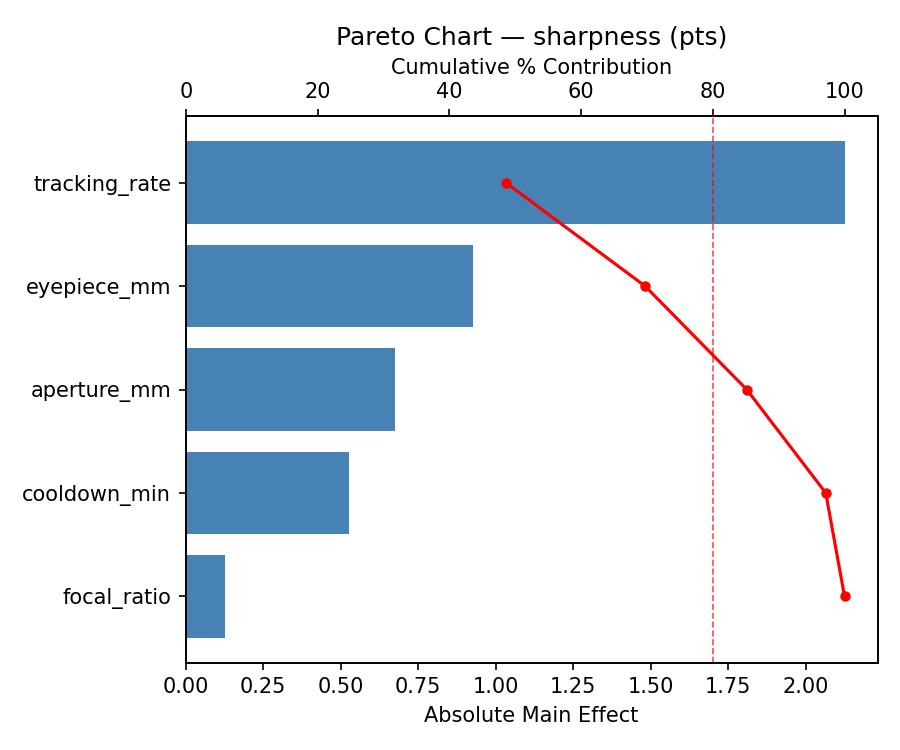
Main Effects Plot
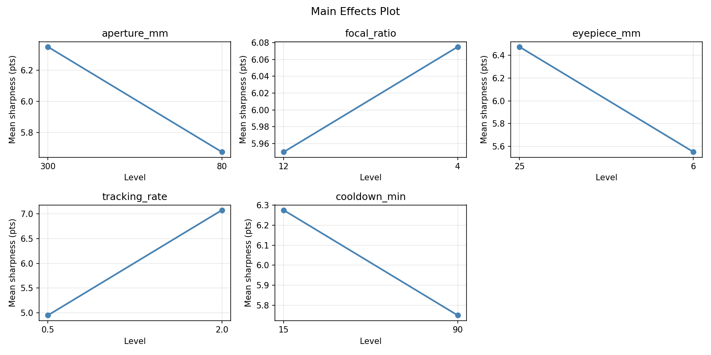
Normal Probability Plot of Effects

Half-Normal Plot of Effects
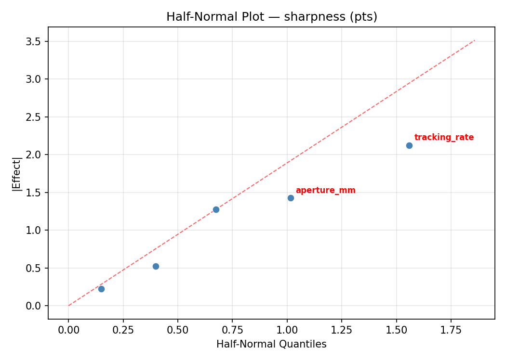
Model Diagnostics

Response: limiting_mag
Top factors: cooldown_min (36.4%), eyepiece_mm (32.3%), aperture_mm (15.2%).
ANOVA
| Source | DF | SS | MS | F | p-value |
|---|
| Source | DF | SS | MS | F | p-value |
| aperture_mm | 1 | 1.1250 | 1.1250 | 0.667 | 0.4513 |
| focal_ratio | 1 | 1.1250 | 1.1250 | 0.667 | 0.4513 |
| eyepiece_mm | 1 | 5.1200 | 5.1200 | 3.034 | 0.1420 |
| tracking_rate | 1 | 0.0050 | 0.0050 | 0.003 | 0.9587 |
| cooldown_min | 1 | 6.4800 | 6.4800 | 3.840 | 0.1073 |
| aperture_mm*focal_ratio | 1 | 5.1200 | 5.1200 | 3.034 | 0.1420 |
| aperture_mm*eyepiece_mm | 1 | 1.1250 | 1.1250 | 0.667 | 0.4513 |
| aperture_mm*tracking_rate | 1 | 6.4800 | 6.4800 | 3.840 | 0.1073 |
| aperture_mm*cooldown_min | 1 | 0.0050 | 0.0050 | 0.003 | 0.9587 |
| focal_ratio*eyepiece_mm | 1 | 1.1250 | 1.1250 | 0.667 | 0.4513 |
| focal_ratio*tracking_rate | 1 | 0.3200 | 0.3200 | 0.190 | 0.6814 |
| focal_ratio*cooldown_min | 1 | 9.2450 | 9.2450 | 5.479 | 0.0663 |
| eyepiece_mm*tracking_rate | 1 | 9.2450 | 9.2450 | 5.479 | 0.0663 |
| eyepiece_mm*cooldown_min | 1 | 0.3200 | 0.3200 | 0.190 | 0.6814 |
| tracking_rate*cooldown_min | 1 | 1.1250 | 1.1250 | 0.667 | 0.4513 |
| Error | (Lenth | PSE) | 5 | 8.4375 | 1.6875 |
| Total | 7 | 23.4200 | 3.3457 | | |
Pareto Chart

Main Effects Plot
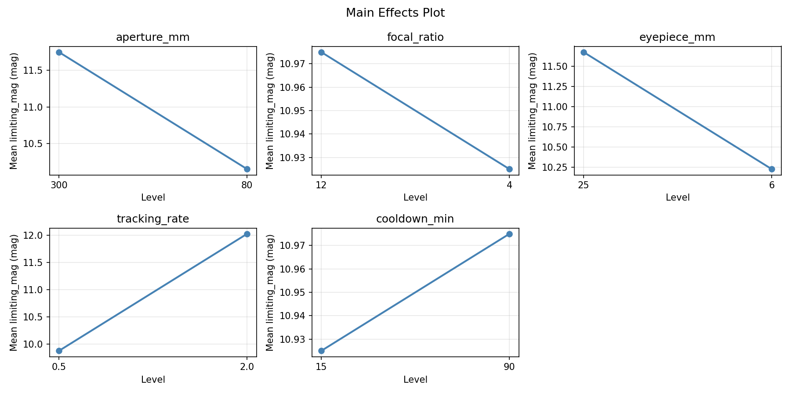
Normal Probability Plot of Effects

Half-Normal Plot of Effects

Model Diagnostics

Response Surface Plots
3D surfaces fitted with quadratic RSM. Red dots are observed data points.
limiting mag aperture mm vs cooldown min

limiting mag aperture mm vs eyepiece mm

limiting mag aperture mm vs focal ratio

limiting mag aperture mm vs tracking rate

limiting mag eyepiece mm vs cooldown min

limiting mag eyepiece mm vs tracking rate
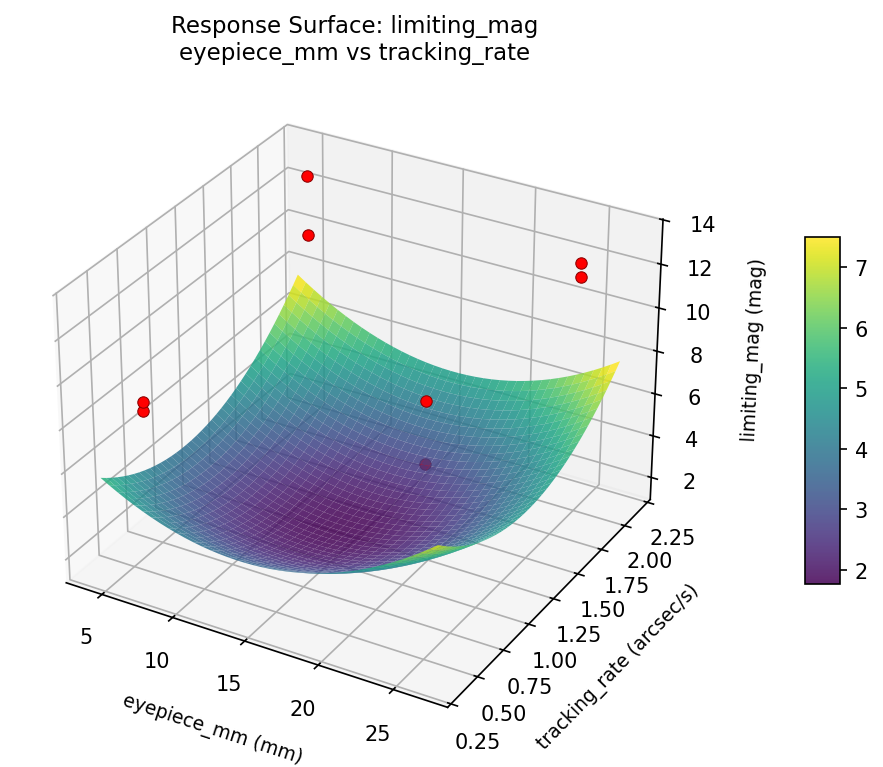
limiting mag focal ratio vs cooldown min

limiting mag focal ratio vs eyepiece mm

limiting mag focal ratio vs tracking rate
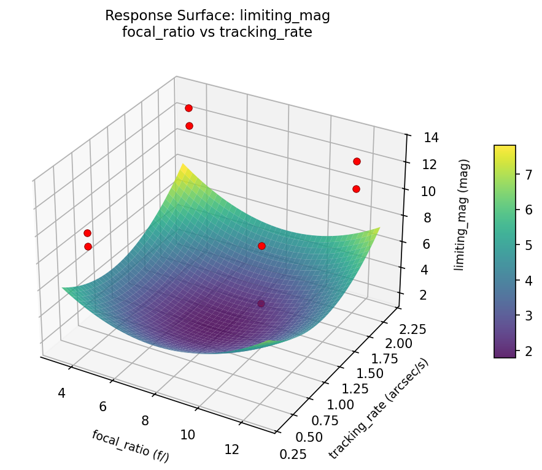
limiting mag tracking rate vs cooldown min
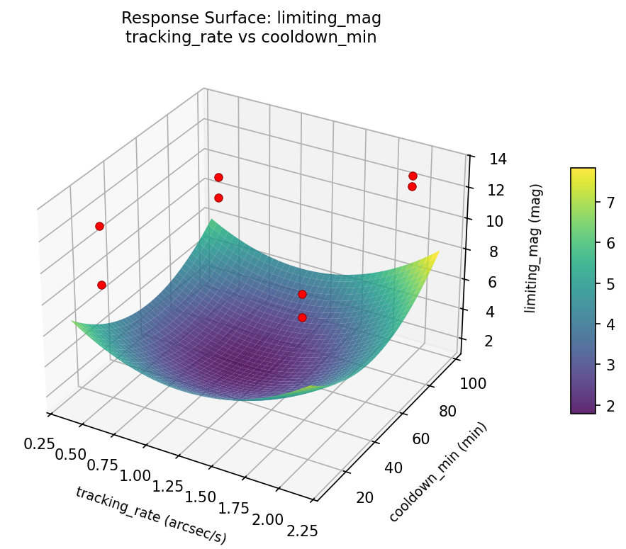
sharpness aperture mm vs cooldown min

sharpness aperture mm vs eyepiece mm
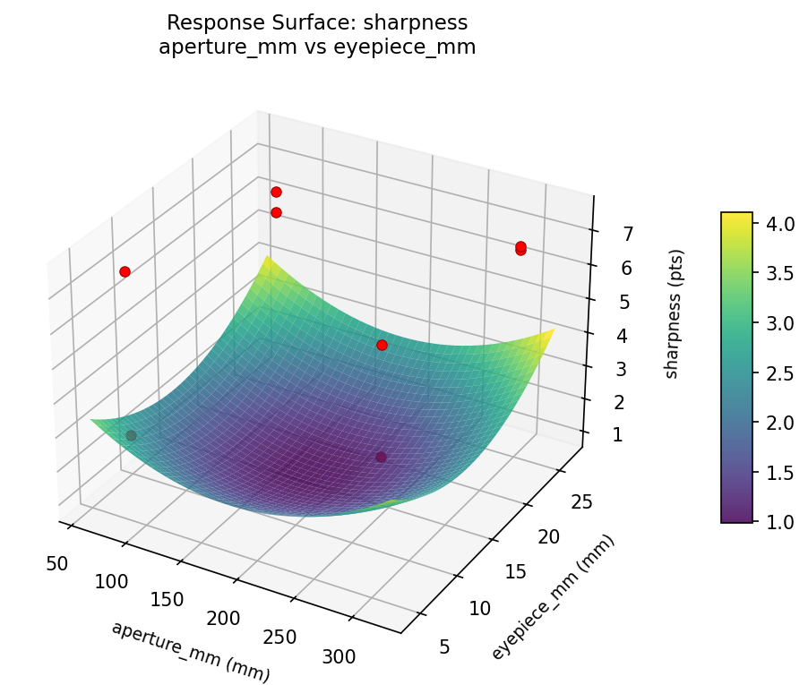
sharpness aperture mm vs focal ratio

sharpness aperture mm vs tracking rate
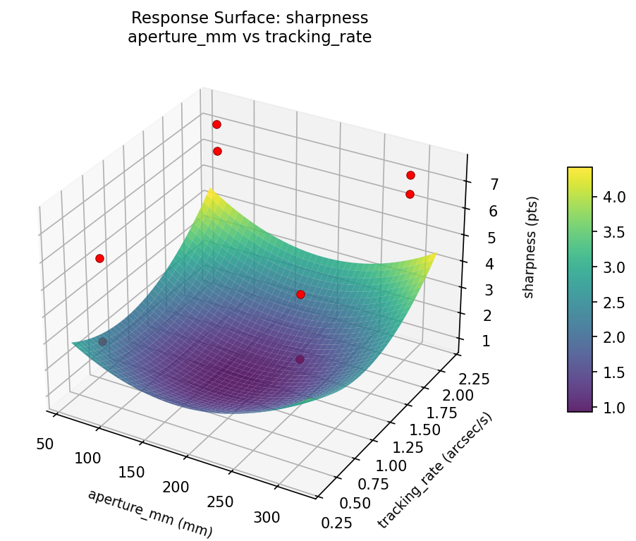
sharpness eyepiece mm vs cooldown min

sharpness eyepiece mm vs tracking rate
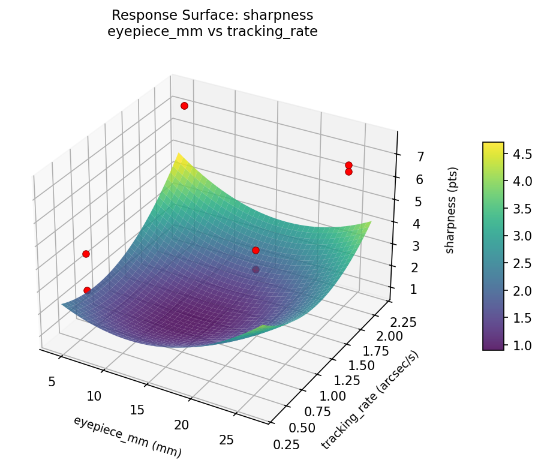
sharpness focal ratio vs cooldown min
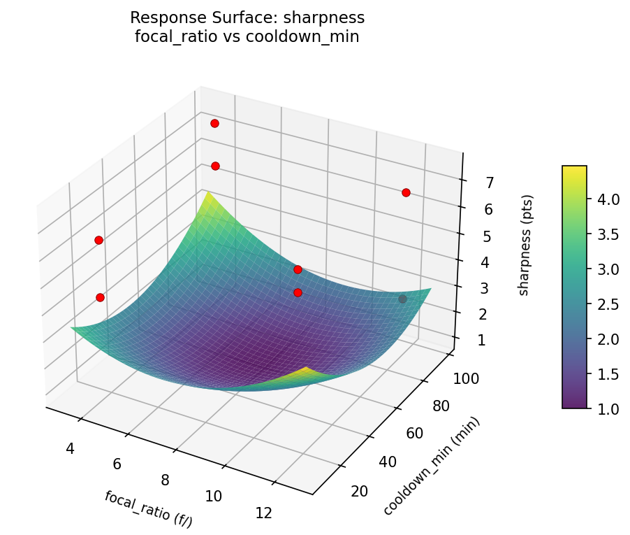
sharpness focal ratio vs eyepiece mm
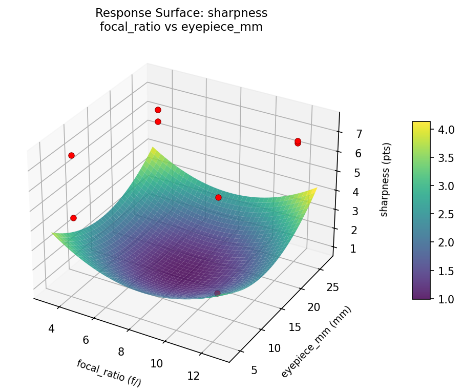
sharpness focal ratio vs tracking rate
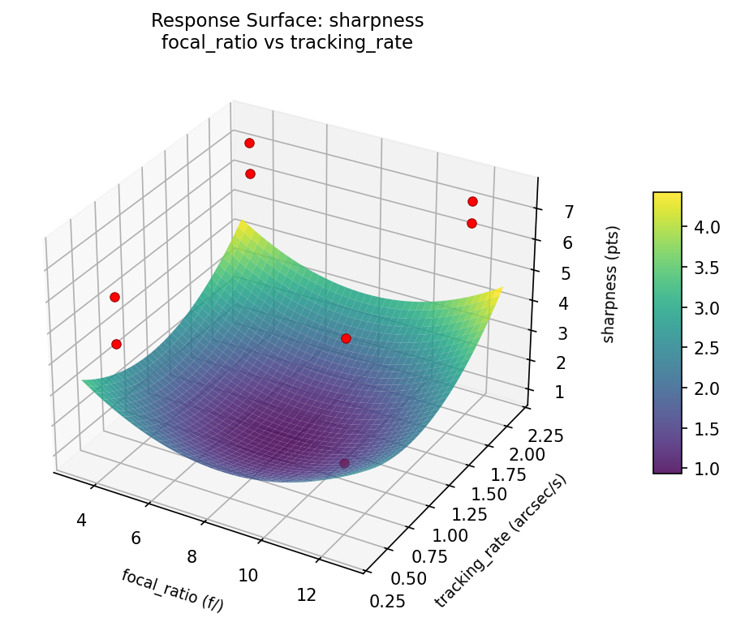
sharpness tracking rate vs cooldown min
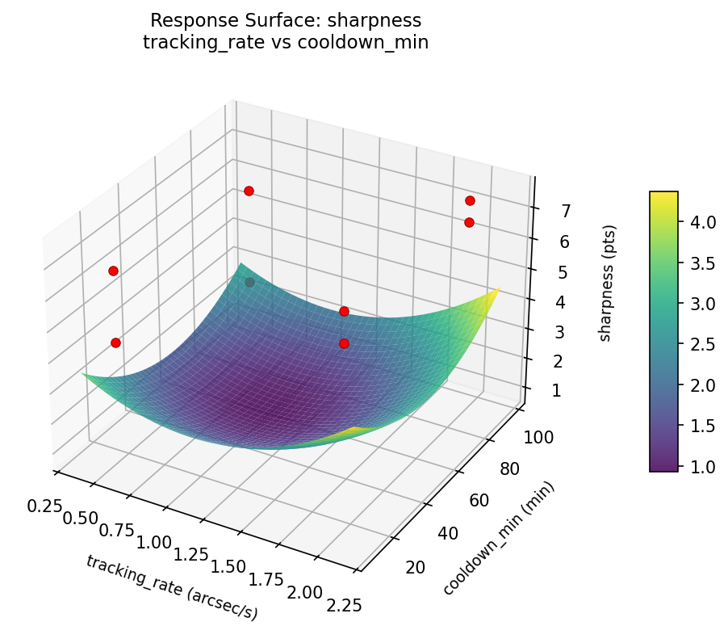
Multi-Objective Optimization
When responses compete, Derringer–Suich desirability finds the best compromise.
Each response is scaled to a 0–1 desirability, then combined via a weighted geometric mean.
Overall Desirability
D = 0.9545
Per-Response Desirability
| Response | Weight | Desirability | Predicted | Dir |
|---|
sharpness |
1.5 |
|
7.50 0.9545 7.50 pts |
↑ |
limiting_mag |
1.0 |
|
13.20 0.9545 13.20 mag |
↑ |
Recommended Settings
| Factor | Value |
|---|
aperture_mm | 80 mm |
focal_ratio | 4 f/ |
eyepiece_mm | 25 mm |
tracking_rate | 0.5 arcsec/s |
cooldown_min | 90 min |
Source: from observed run #1
Trade-off Summary
Sacrifice = how much worse than single-objective best.
| Response | Predicted | Best Observed | Sacrifice |
|---|
limiting_mag | 13.20 | 13.20 | +0.00 |
Top 3 Runs by Desirability
| Run | D | Factor Settings |
|---|
| #8 | 0.8203 | aperture_mm=80, focal_ratio=12, eyepiece_mm=6, tracking_rate=2.0, cooldown_min=15 |
| #4 | 0.8086 | aperture_mm=300, focal_ratio=4, eyepiece_mm=6, tracking_rate=2.0, cooldown_min=90 |
Model Quality
| Response | R² | Type |
|---|
limiting_mag | 0.5047 | linear |
Full Multi-Objective Output
============================================================
MULTI-OBJECTIVE OPTIMIZATION
Method: Derringer-Suich Desirability Function
============================================================
Overall desirability: D = 0.9545
Response Weight Desirability Predicted Direction
---------------------------------------------------------------------
sharpness 1.5 0.9545 7.50 pts ↑
limiting_mag 1.0 0.9545 13.20 mag ↑
Recommended settings:
aperture_mm = 80 mm
focal_ratio = 4 f/
eyepiece_mm = 25 mm
tracking_rate = 0.5 arcsec/s
cooldown_min = 90 min
(from observed run #1)
Trade-off summary:
sharpness: 7.50 (best observed: 7.50, sacrifice: +0.00)
limiting_mag: 13.20 (best observed: 13.20, sacrifice: +0.00)
Model quality:
sharpness: R² = 0.7634 (linear)
limiting_mag: R² = 0.5047 (linear)
Top 3 observed runs by overall desirability:
1. Run #1 (D=0.9545): aperture_mm=80, focal_ratio=4, eyepiece_mm=25, tracking_rate=0.5, cooldown_min=90
2. Run #8 (D=0.8203): aperture_mm=80, focal_ratio=12, eyepiece_mm=6, tracking_rate=2.0, cooldown_min=15
3. Run #4 (D=0.8086): aperture_mm=300, focal_ratio=4, eyepiece_mm=6, tracking_rate=2.0, cooldown_min=90
Full Analysis Output
=== Main Effects: sharpness ===
Factor Effect Std Error % Contribution
--------------------------------------------------------------
focal_ratio -1.4250 0.5777 31.5%
cooldown_min 1.2750 0.5777 28.2%
eyepiece_mm -0.6750 0.5777 14.9%
aperture_mm 0.6250 0.5777 13.8%
tracking_rate 0.5250 0.5777 11.6%
=== ANOVA Table: sharpness ===
Source DF SS MS F p-value
-----------------------------------------------------------------------------
aperture_mm 1 0.7812 0.7812 0.667 0.4513
focal_ratio 1 4.0612 4.0612 3.466 0.1217
eyepiece_mm 1 0.9112 0.9112 0.778 0.4182
tracking_rate 1 0.5513 0.5513 0.470 0.5233
cooldown_min 1 3.2513 3.2513 2.774 0.1567
aperture_mm*focal_ratio 1 0.9112 0.9112 0.778 0.4182
aperture_mm*eyepiece_mm 1 4.0612 4.0612 3.466 0.1217
aperture_mm*tracking_rate 1 3.2512 3.2512 2.774 0.1567
aperture_mm*cooldown_min 1 0.5512 0.5512 0.470 0.5233
focal_ratio*eyepiece_mm 1 0.7812 0.7812 0.667 0.4513
focal_ratio*tracking_rate 1 0.1012 0.1012 0.086 0.7806
focal_ratio*cooldown_min 1 9.0312 9.0312 7.707 0.0391
eyepiece_mm*tracking_rate 1 9.0313 9.0313 7.707 0.0391
eyepiece_mm*cooldown_min 1 0.1012 0.1012 0.086 0.7806
tracking_rate*cooldown_min 1 0.7812 0.7812 0.667 0.4513
Error (Lenth PSE) 5 5.8594 1.1719
Total 7 18.6887 2.6698
Note: Error estimated using Lenth's pseudo-standard-error (unreplicated design)
=== Interaction Effects: sharpness ===
Factor A Factor B Interaction % Contribution
------------------------------------------------------------------------
focal_ratio cooldown_min 2.1250 21.6%
eyepiece_mm tracking_rate 2.1250 21.6%
aperture_mm eyepiece_mm 1.4250 14.5%
aperture_mm tracking_rate -1.2750 12.9%
aperture_mm focal_ratio 0.6750 6.9%
focal_ratio eyepiece_mm -0.6250 6.3%
tracking_rate cooldown_min -0.6250 6.3%
aperture_mm cooldown_min -0.5250 5.3%
focal_ratio tracking_rate -0.2250 2.3%
eyepiece_mm cooldown_min -0.2250 2.3%
=== Summary Statistics: sharpness ===
aperture_mm:
Level N Mean Std Min Max
------------------------------------------------------------
300 4 5.7000 1.9374 2.8000 6.8000
80 4 6.3250 1.4886 4.4000 7.5000
focal_ratio:
Level N Mean Std Min Max
------------------------------------------------------------
12 4 6.7250 0.6551 5.9000 7.5000
4 4 5.3000 2.1087 2.8000 7.5000
eyepiece_mm:
Level N Mean Std Min Max
------------------------------------------------------------
25 4 6.3500 1.3478 4.4000 7.5000
6 4 5.6750 2.0271 2.8000 7.5000
tracking_rate:
Level N Mean Std Min Max
------------------------------------------------------------
0.5 4 5.7500 2.0728 2.8000 7.5000
2.0 4 6.2750 1.3226 4.4000 7.5000
cooldown_min:
Level N Mean Std Min Max
------------------------------------------------------------
15 4 5.3750 2.1701 2.8000 7.5000
90 4 6.6500 0.6608 5.9000 7.5000
=== Main Effects: limiting_mag ===
Factor Effect Std Error % Contribution
--------------------------------------------------------------
cooldown_min 1.8000 0.6467 36.4%
eyepiece_mm -1.6000 0.6467 32.3%
aperture_mm -0.7500 0.6467 15.2%
focal_ratio -0.7500 0.6467 15.2%
tracking_rate -0.0500 0.6467 1.0%
=== ANOVA Table: limiting_mag ===
Source DF SS MS F p-value
-----------------------------------------------------------------------------
aperture_mm 1 1.1250 1.1250 0.667 0.4513
focal_ratio 1 1.1250 1.1250 0.667 0.4513
eyepiece_mm 1 5.1200 5.1200 3.034 0.1420
tracking_rate 1 0.0050 0.0050 0.003 0.9587
cooldown_min 1 6.4800 6.4800 3.840 0.1073
aperture_mm*focal_ratio 1 5.1200 5.1200 3.034 0.1420
aperture_mm*eyepiece_mm 1 1.1250 1.1250 0.667 0.4513
aperture_mm*tracking_rate 1 6.4800 6.4800 3.840 0.1073
aperture_mm*cooldown_min 1 0.0050 0.0050 0.003 0.9587
focal_ratio*eyepiece_mm 1 1.1250 1.1250 0.667 0.4513
focal_ratio*tracking_rate 1 0.3200 0.3200 0.190 0.6814
focal_ratio*cooldown_min 1 9.2450 9.2450 5.479 0.0663
eyepiece_mm*tracking_rate 1 9.2450 9.2450 5.479 0.0663
eyepiece_mm*cooldown_min 1 0.3200 0.3200 0.190 0.6814
tracking_rate*cooldown_min 1 1.1250 1.1250 0.667 0.4513
Error (Lenth PSE) 5 8.4375 1.6875
Total 7 23.4200 3.3457
Note: Error estimated using Lenth's pseudo-standard-error (unreplicated design)
=== Interaction Effects: limiting_mag ===
Factor A Factor B Interaction % Contribution
------------------------------------------------------------------------
focal_ratio cooldown_min 2.1500 19.9%
eyepiece_mm tracking_rate 2.1500 19.9%
aperture_mm tracking_rate -1.8000 16.7%
aperture_mm focal_ratio 1.6000 14.8%
aperture_mm eyepiece_mm 0.7500 6.9%
focal_ratio eyepiece_mm 0.7500 6.9%
tracking_rate cooldown_min 0.7500 6.9%
focal_ratio tracking_rate -0.4000 3.7%
eyepiece_mm cooldown_min -0.4000 3.7%
aperture_mm cooldown_min 0.0500 0.5%
=== Summary Statistics: limiting_mag ===
aperture_mm:
Level N Mean Std Min Max
------------------------------------------------------------
300 4 11.3250 1.9704 8.4000 12.5000
80 4 10.5750 1.8839 8.8000 13.2000
focal_ratio:
Level N Mean Std Min Max
------------------------------------------------------------
12 4 11.3250 1.3865 9.8000 12.5000
4 4 10.5750 2.3472 8.4000 13.2000
eyepiece_mm:
Level N Mean Std Min Max
------------------------------------------------------------
25 4 11.7500 1.9942 8.8000 13.2000
6 4 10.1500 1.4572 8.4000 11.9000
tracking_rate:
Level N Mean Std Min Max
------------------------------------------------------------
0.5 4 10.9750 2.2574 8.4000 13.2000
2.0 4 10.9250 1.6460 8.8000 12.5000
cooldown_min:
Level N Mean Std Min Max
------------------------------------------------------------
15 4 10.0500 1.8699 8.4000 12.5000
90 4 11.8500 1.4663 9.8000 13.2000
Optimization Recommendations
=== Optimization: sharpness ===
Direction: maximize
Best observed run: #1
aperture_mm = 80
focal_ratio = 12
eyepiece_mm = 6
tracking_rate = 2.0
cooldown_min = 15
Value: 7.5
RSM Model (linear, R² = 0.8468, Adj R² = 0.4639):
Coefficients:
intercept +6.0125
aperture_mm -0.8625
focal_ratio +0.8875
eyepiece_mm +0.6625
tracking_rate +0.0625
cooldown_min -0.0625
Predicted optimum (from linear model, at observed points):
aperture_mm = 80
focal_ratio = 12
eyepiece_mm = 6
tracking_rate = 2.0
cooldown_min = 15
Predicted value: 7.2250
Surface optimum (via L-BFGS-B, linear model):
aperture_mm = 80
focal_ratio = 12
eyepiece_mm = 25
tracking_rate = 2
cooldown_min = 15
Predicted value: 8.5500
Model quality: Good fit — general trends are captured, some noise remains.
Factor importance:
1. focal_ratio (effect: -1.8, contribution: 35.0%)
2. aperture_mm (effect: 1.7, contribution: 34.0%)
3. eyepiece_mm (effect: -1.3, contribution: 26.1%)
4. tracking_rate (effect: 0.1, contribution: 2.5%)
5. cooldown_min (effect: -0.1, contribution: 2.5%)
=== Optimization: limiting_mag ===
Direction: maximize
Best observed run: #1
aperture_mm = 80
focal_ratio = 12
eyepiece_mm = 6
tracking_rate = 2.0
cooldown_min = 15
Value: 13.2
RSM Model (linear, R² = 0.9690, Adj R² = 0.8917):
Coefficients:
intercept +10.9500
aperture_mm -1.5750
focal_ratio +0.5500
eyepiece_mm +0.2250
tracking_rate -0.0250
cooldown_min -0.0500
Predicted optimum (from linear model, at observed points):
aperture_mm = 80
focal_ratio = 12
eyepiece_mm = 6
tracking_rate = 2.0
cooldown_min = 15
Predicted value: 12.8750
Surface optimum (via L-BFGS-B, linear model):
aperture_mm = 80
focal_ratio = 12
eyepiece_mm = 25
tracking_rate = 0.5
cooldown_min = 15
Predicted value: 13.3750
Model quality: Excellent fit — surface predictions are reliable.
Factor importance:
1. aperture_mm (effect: 3.2, contribution: 64.9%)
2. focal_ratio (effect: -1.1, contribution: 22.7%)
3. eyepiece_mm (effect: -0.5, contribution: 9.3%)
4. cooldown_min (effect: -0.1, contribution: 2.1%)
5. tracking_rate (effect: -0.0, contribution: 1.0%)